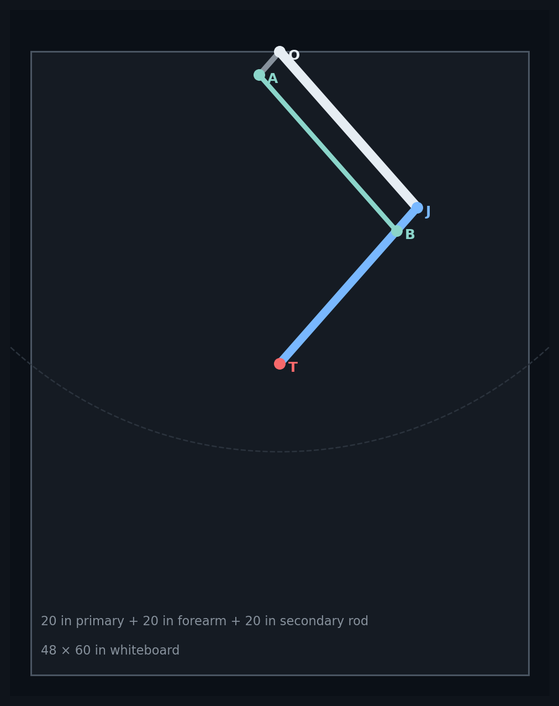
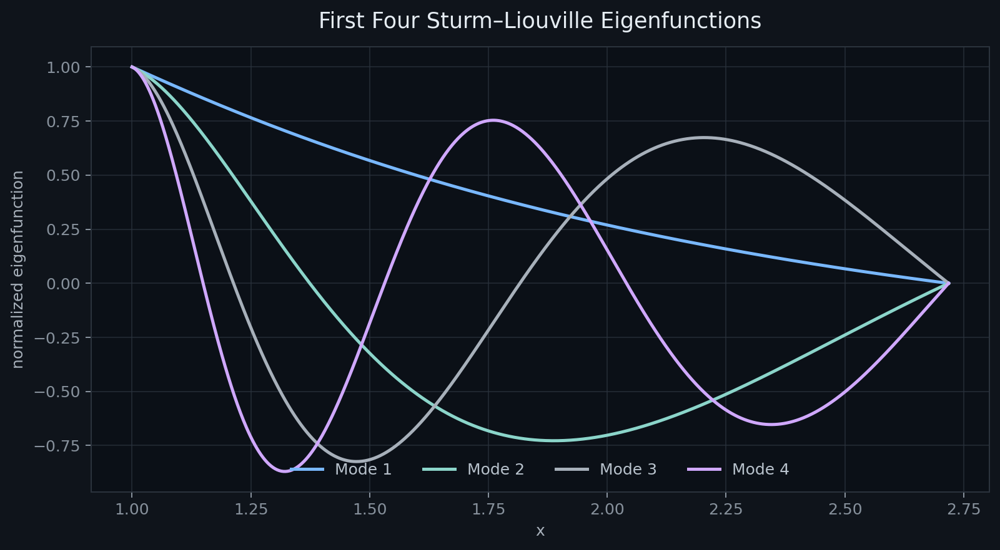

Education
Selected engineering coursework and class work.
Courses
MEGN 544 — Robot Mechanics
Graduate robotics coursework covering rigid-body transformations, kinematics, and trajectory planning. My main course project is a whiteboard drawing robot with a custom planar arm and a Python motion-planning and control stack.

Closed-loop arm geometry used by the project software.
MEGN 514A — Advanced Dynamics
Graduate dynamics coursework with analytical and numerical modeling in MATLAB. Selected work includes a hummingbird wing model with prescribed flapping motion, aerodynamic force calculations, flexible-wing deflection, and trimmed flight conditions.
The visualization uses the geometry defined in the MATLAB model: 54.5 mm wing radius, a 50% rigid inner section, tapered chord, and a flexible distal section.
MEGN 502 — Advanced Engineering Analysis
Graduate applied-mathematics coursework using MATLAB for engineering analysis. Selected labs include eigenvalue systems, special functions, Sturm-Liouville eigenproblems, and analytical/numerical solution methods.

First four normalized eigenfunctions from the Sturm-Liouville lab.
MEGN 566 — Combustion
Combustion coursework using MATLAB, Python, and Cantera for reacting-flow and energy-balance analysis. Selected work includes Cantera flame calculations and a two-dimensional cell-based wildfire energy model with fuel moisture, wind, heat transfer, combustion, and fuel consumption.
MEGN 514 — Continuum Mechanics
Graduate coursework in continuum kinematics, deformation, stress and strain, tensor methods, and governing equations for continuous media.
MECH 460 — Aeronautics
Aeronautics coursework covering aircraft analysis and design. My class work included a quantitative Boeing 737 MAX case study comparing stability, propulsion efficiency, and the engineering tradeoffs surrounding MCAS and hardware redesign.
MECH 518 — Orbital Mechanics
Orbital mechanics coursework with applied analysis and STK modeling. My class work included designing and analyzing a four-satellite Molniya constellation for continuous northern-region coverage.
MECH 502 — Advanced/Additive Manufacturing Engineering
Advanced coursework in additive manufacturing engineering. Selected class work will be added as I continue expanding the portfolio.